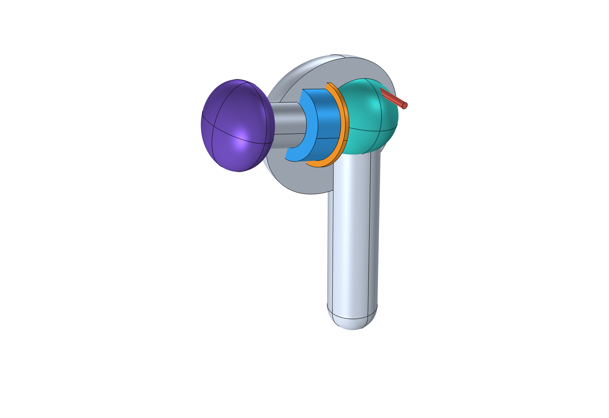
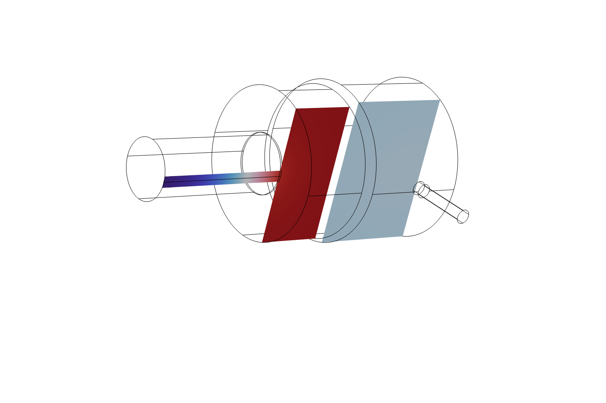
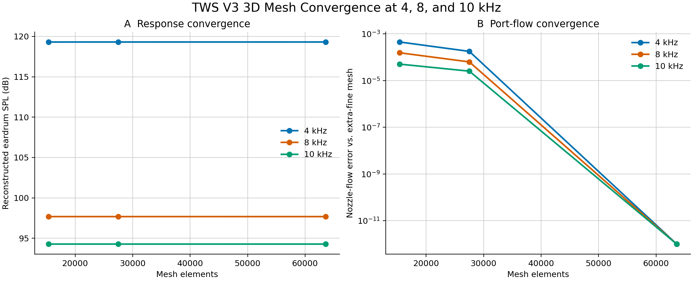
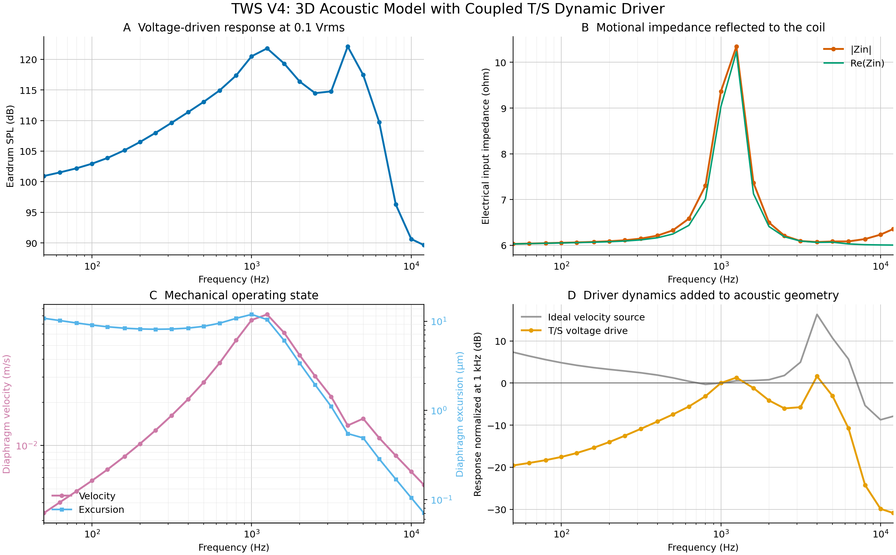
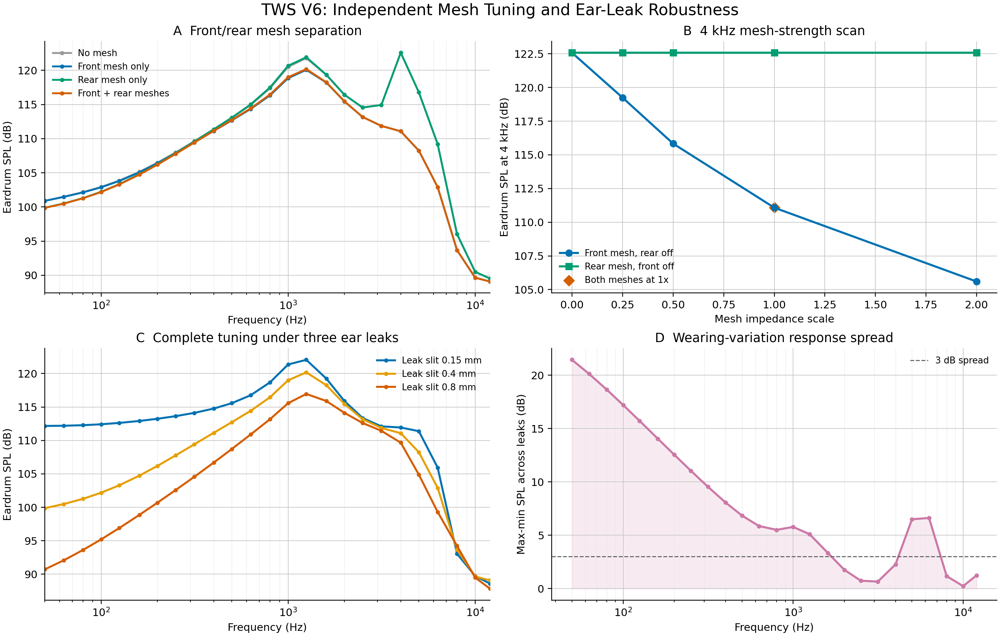
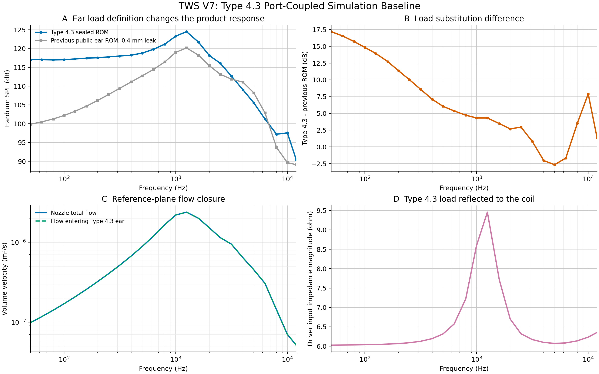

COMSOL ELECTROACOUSTICS
基于 COMSOL 的 TWS 耳机电声系统建模与声学结构优化
面向 TWS 耳机低频密封敏感和 4 kHz 附近共振问题，建立从动圈驱动器、内部声学结构到人工耳负载的参数化仿真链路。
前网使 4 kHz 响应降低 11.50 dB；等效泄漏由 0.15 mm 增至 0.8 mm 时，50 Hz 响应下降 21.44 dB；27,516 单元模型相对 63,591 单元参考解的最大 SPL 偏差为 0.00154 dB。
项目背景
TWS 耳机的频率响应不仅取决于扬声器单元，还受到前后腔体积、声嘴尺寸、网布阻抗、泄压结构和佩戴密封的共同影响。佩戴泄漏会使低频压力难以建立，而声嘴、前腔和耳道之间的耦合又容易在中高频产生高 Q 共振。
建模方案
- 建立二维轴对称快速调音模型，用于泄漏与端口负载分析。
- 建立通用带柄式 TWS 三维几何，将前腔、声嘴、后腔和后泄压孔构造为互不重叠的空气域。
- 采用 T/S 参数描述 10 mm 动圈单元，联立计算电输入、振膜运动和腔体声场。
- 为声嘴和泄压孔加入圆管 LRF 热黏性损耗，以复比声阻抗描述前网和后网。
- 接入三种佩戴泄漏负载，并通过复阻抗端口连接 Type 4.3 人工耳参考模型。
三维产品结构

模型包括 10 mm 动圈单元、前腔、后腔、倾斜声嘴、硅胶耳帽和后泄压通道。用于声学求解的前腔、声嘴、后腔和泄压孔被构造为四个互不重叠的空气域，前后腔之间保留驱动器占位间隔，避免被压力声学连续性条件错误连通。
该几何用于研究内部声学路径，不对应任何品牌或量产型号。尺寸均以参数形式定义，便于后续替换为实际产品数据。
三维内部声场

8 kHz 下，声嘴内出现明显的沿程压力和相位变化，前腔、声嘴与耳侧负载之间形成非均匀声场。这说明在中高频段，声嘴不能完全视为零长度集总元件，偏置声嘴、截面突变和局部三维结构会影响响应峰谷。
图中的颜色表示复声压实部 real(p)，用于观察相位正负和压力梯度，并不是声压级。三维结果与二维快速模型在 8–10 kHz 出现明显差异，因此二维模型用于参数初筛，三维模型用于候选结构复核。
网格收敛验证

分别采用 15,383、27,516 和 63,591 个单元进行计算，并以 63,591 单元的 extra-fine 网格作为参考：
- 15,383 单元模型的最大耳膜 SPL 偏差为 0.00388 dB，声嘴流量最大相对偏差为 0.0447%；
- 27,516 单元模型的最大耳膜 SPL 偏差为 0.00154 dB，声嘴流量最大相对偏差为 0.0177%。
后续全频计算和参数扫描采用 27,516 单元网格，在计算成本与离散精度之间取得平衡。
T/S 动圈驱动器耦合

将理想速度边界替换为电压驱动的 T/S 动圈模型，使线圈电流、反电动势、振膜速度和前后腔压力在同一频域系统中联立求解。0.1 Vrms 激励下，输入阻抗峰与振膜速度峰均位于约 1.25 kHz，体现了驱动器机械系统与腔体声学负载之间的耦合。
电气方程最大相对残差为 2.55×10⁻¹⁵，机械—声学方程最大相对残差为 1.34×10⁻¹⁴，联立方程的数值实现通过检查。
Mms 和 BL 参考官方微型扬声器模型，其余待测参数使用可替换的工程初值。因此本图用于分析耦合机制和相对变化，不将当前绝对 SPL 或输入阻抗作为某款量产单元的性能指标。
前后网调音与佩戴泄漏

前网主导 4 kHz 共振控制
| 工况 | 4 kHz耳膜SPL | 相对无网变化 |
|---|---|---|
| 无前后网 | 122.585 dB | 0 dB |
| 仅前网 | 111.081 dB | -11.504 dB |
| 仅后网 | 122.585 dB | 约 0 dB |
| 前网与后网同时开启 | 111.081 dB | -11.504 dB |
4 kHz 峰值主要由前网控制。前网直接串联在振膜—前腔—声嘴—耳侧负载的体积速度通路中，可以降低该路径的高 Q 共振；后网位于后腔泄压路径，对 4 kHz 前侧共振影响很小。后网的最大独立影响出现在 50 Hz，约为 -1.02 dB，更适合用于调节后腔压力释放、低频负载和振膜工作状态。
佩戴泄漏主导低频一致性
保持产品结构和调音参数不变，将耳侧等效泄漏由 0.15 mm 增大到 0.8 mm，最大佩戴离散出现在 50 Hz。泄漏为前腔和耳道压力提供旁路，使低频声压难以建立；随着频率升高，耳道模态和局部几何逐渐成为主要因素，泄漏曲线差异减小。
前网负责控制 4 kHz 附近共振，佩戴密封负责低频一致性。增加网布阻力不能修复耳帽泄漏造成的低频声学短路，低频问题还需要从耳帽尺寸、材料柔顺性、插入深度或泄漏检测与补偿算法解决。
Type 4.3 人工耳耦合

从 COMSOL 6.4 官方 ITU-T P.57 Type 4.3 模型中提取参考面的复输入阻抗和鼓膜传递阻抗，并将其作为降阶负载接入 TWS 声嘴端口。端口同时保留可反标的耳帽连接阻抗和密封泄漏支路。
Type 4.3 密封基线与此前 0.4 mm 泄漏耳侧模型在低频存在明显差异，例如 50 Hz 相差约 17.19 dB，4 kHz 附近相差约 -2.05 dB。该差异说明耳侧负载定义、密封条件和插入状态都会改变耳机看到的声学阻抗，不能把人工耳视为对产品响应没有反馈的单纯测量点。
参考面总流量与进入 Type 4.3 耳道的流量最大闭合误差约为 2.36×10⁻¹⁶，端口连接通过数值检查。
当前 Type 4.3 结果是标准几何下的仿真基线，并非某个商用人工耳的数字孪生，也尚未使用本项目样机数据进行灵敏度、耳帽连接和密封参数反标。
主要结论
结构调音
前网是 4 kHz 附近共振的主要控制部件；后网主要改变后腔低频负载和压力平衡。
佩戴鲁棒性
耳帽密封与插入状态是低频一致性的主要风险来源，网布调音无法替代密封设计。
模型验证
完成端口阻抗回算、网格收敛和联立方程残差检查，并建立 Type 4.3 测试接口。
当前边界
- 三维几何为通用非品牌化结构，不对应具体量产型号；
- 部分 T/S 参数和前后网阻抗为工程初值，绝对 SPL 尚未标定；
- 等效泄漏宽度用于同模型灵敏度比较，不能直接作为耳帽制造公差；
- 当前模型为线性小信号频域模型，未包含大振幅非线性、振膜分割振动、壳体结构振动、ANC/DSP 及生产公差。